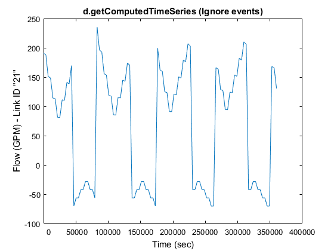
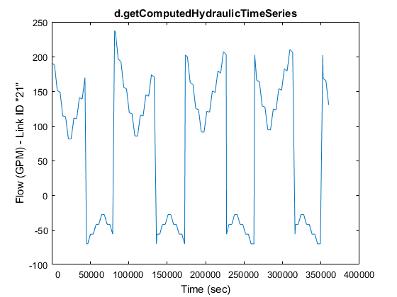
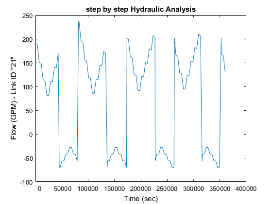
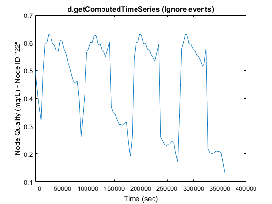
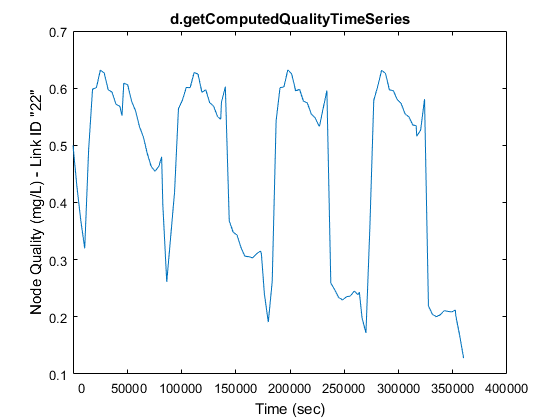
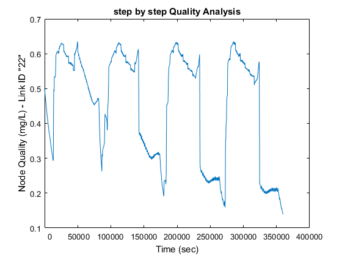

d=epanet('Net1.inp');tic;
hours = 100;
d.setTimeSimulationDuration(hours*3600);
Results = d.getComputedTimeSeries
tocResults = toc;tic;
Hydraulics = d.getComputedHydraulicTimeSeries
tocHydraulics = toc;tic;
Quality = d.getComputedQualityTimeSeries
tocQuality = toc;tic;
pipeindex=4;
nodeindex=6;
d.openHydraulicAnalysis;
d.initializeHydraulicAnalysis;
tstep=1;P=[];T_H=[];D=[];H=[];F=[];
while (tstep>0)
t=d.runHydraulicAnalysis;
P=[P; d.getNodePressure];
D=[D; d.getNodeActualDemand];
H=[H; d.getNodeHydaulicHead];
F=[F; d.getLinkFlows];
T_H=[T_H; t];
tstep=d.nextHydraulicAnalysisStep;
end
d.closeHydraulicAnalysis
d.openQualityAnalysis
d.initializeQualityAnalysis
tleft=1; P=[];T_Q=[];Q=[];
while (tleft>0)
t=d.runQualityAnalysis;
Q=[Q; d.getNodeActualQuality];
T_Q=[T_Q; t];
tleft = d.stepQualityAnalysisTimeLeft;
end
d.closeQualityAnalysis;
d.unload
fprintf('\nSimulation duration: %d hours\n', hours);
disp(['Run Time of function d.getComputedTimeSeries: ', num2str(tocResults), '(sec)'])
disp(['Run Time of function d.getComputedHydraulicTimeSeries: ', num2str(tocHydraulics), '(sec)'])
disp(['Run Time of function d.getComputedQualityTimeSeries: ', num2str(tocQuality), '(sec)'])
figure;
plot(Results.Time, Results.Flow(:,pipeindex));
title('d.getComputedTimeSeries (Ignore events)');
xlabel('Time (sec)'); ylabel(['Flow (',d.LinkFlowUnits{1},') - Link ID "',d.LinkNameID{pipeindex},'"'])
set(gca,'XTickLabel',num2str(get(gca,'XTick').'));
figure;
plot(Hydraulics.Time, Hydraulics.Flow(:,pipeindex));
title('d.getComputedHydraulicTimeSeries');
xlabel('Time (sec)'); ylabel(['Flow (',d.LinkFlowUnits{1},') - Link ID "',d.LinkNameID{pipeindex},'"'])
set(gca,'XTickLabel',num2str(get(gca,'XTick').'));
h=figure;
plot(0);axis off
whitebg('w');
figure;
plot(T_H, F(:,pipeindex));
title('step by step Hydraulic Analysis');
xlabel('Time (sec)'); ylabel(['Flow (',d.LinkFlowUnits{1},') - Link ID "',d.LinkNameID{pipeindex},'"'])
set(gca,'XTickLabel',num2str(get(gca,'XTick').'));
figure;
plot(Results.Time, Results.NodeQuality(:,nodeindex));
title('d.getComputedTimeSeries (Ignore events)');
xlabel('Time (sec)'); ylabel(['Node Quality (',d.QualityChemUnits,') - Node ID "',d.NodeNameID{nodeindex},'"'])
set(gca,'XTickLabel',num2str(get(gca,'XTick').'));
figure;
plot(Quality.Time, Quality.NodeQuality(:,nodeindex));
title('d.getComputedQualityTimeSeries');
xlabel('Time (sec)'); ylabel(['Node Quality (',d.QualityChemUnits,') - Link ID "',d.NodeNameID{nodeindex},'"'])
set(gca,'XTickLabel',num2str(get(gca,'XTick').'));
figure;
plot(T_Q, Q(:,nodeindex));
title('step by step Quality Analysis');
xlabel('Time (sec)'); ylabel(['Node Quality (',d.QualityChemUnits,') - Link ID "',d.NodeNameID{nodeindex},'"'])
set(gca,'XTickLabel',num2str(get(gca,'XTick').'));
EPANET loaded sucessfuly.
Results =
Time: [101x1 double]
Pressure: [101x11 double]
Demand: [101x11 double]
Head: [101x11 double]
NodeQuality: [101x11 double]
Flow: [101x13 double]
Velocity: [101x13 double]
HeadLoss: [101x13 double]
Status: [101x13 double]
Setting: [101x13 double]
ReactionRate: [101x13 double]
FrictionFactor: [101x13 double]
LinkQuality: [101x13 double]
Hydraulics =
Time: [109x1 double]
Pressure: [109x11 double]
Demand: [109x11 double]
Head: [109x11 double]
TankVolume: [109x11 double]
Flow: [109x13 double]
Velocity: [109x13 double]
HeadLoss: [109x13 double]
Status: [109x13 double]
Setting: [109x13 double]
Energy: [109x13 double]
Efficiency: [109x13 double]
Quality =
Time: [109x1 double]
NodeQuality: [109x11 double]
LinkQuality: [109x13 double]
MassFlowRate: [109x11 double]
EPANET Class is unloaded
Simulation duration: 100 hours
Run Time of function d.getComputedTimeSeries: 0.10333(sec)
Run Time of function d.getComputedHydraulicTimeSeries: 0.25558(sec)
Run Time of function d.getComputedQualityTimeSeries: 0.081972(sec)
     